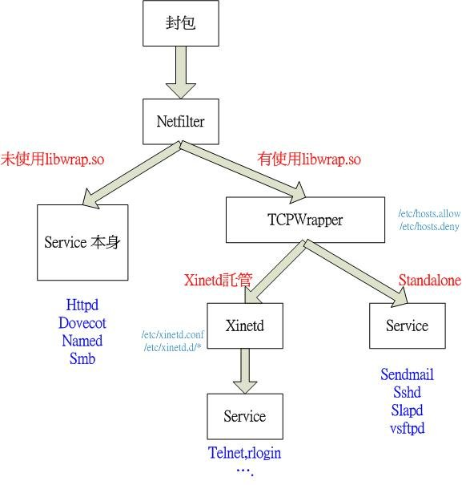
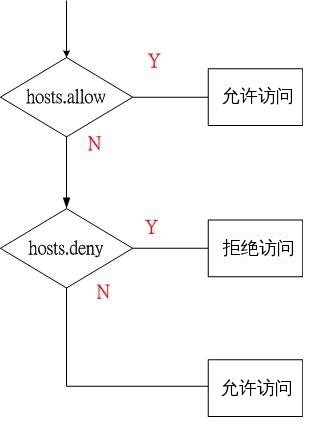

| 版本 | 日期 | 状态 | 修订人 | 摘要 |
|---|---|---|---|---|
| V1.0 | 2016-03-28 | 创建 | HunterFu | 初始版本 |
一般在操作系统层面上安装防火墙来处理网络连接,然而虽然防火墙有非常广泛的用途，但他却不是万能的,例如它无法处理类似的向连接发起者发送一些文本这样的任务。
TCP Wrappers扩展了inetd为受其控制的服务程序实施控制的能力,通过使用这种方法，它能够提供日志支持、返回消息给联入的连接、使得服务程序只接受内部连接，等等。
然而，由TCP Wrappers提供的一些额外的安全功能，不应被视为好的防火墙的替代品,TCP Wrappers 应结合防火墙或其他安全加强设施一并使用，为系统多提供一层安全防护。

从上图可以看出tcp wrapper 在系统中的层级结构和应用程序的关系.
注意 : Netfilter(iptable) 是工作在网络层的 而 tcp wrapper 是工作在应用层

从上图可以清楚的看出 /etc/hosts.allow 和 /etc/hosts.deny 配置文件规则关系
hosts.allow 和 hosts.deny 语法格式如下:
daemon : client [:option1:option2:…]
daemon 可以是各种服务程序，比如 sshd. 服务程序在编译的时候将libwrap.so.0动态库进来就可以使用TCP Wrappers.
可以使用ldd命令查看程序是否支持libwrap,例如:
[root@localhost]# ldd /usr/sbin/sshd | grep libwrap
libwrap.so.0 => /lib/libwrap.so.0 (0x0034f000)
client 是来源用户列表以逗号分隔，可以是主机名，或者ip地址等.
options 附加选项 是在规则匹配后，可以选择发邮件给管理员或者记录日志等，每个动作之间使用冒号分隔
本地网络是 192.168.54.0/24, 可以访问本机服务的列表如下:
[root@localhost]# cat /etc/hosts.allow:
popd : 192.168.54.137
imapd : 192.168.54.0/255.255.255.0
sendmail : 192.168.54.0/255.255.255.0
sshd : 192.168.54.2 172.16.234.4
[root@localhost]# cat /etc/hosts.deny:
ALL : ALL
总体来说,以下是使用TCP Wrapper的小技巧: